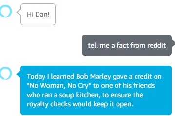
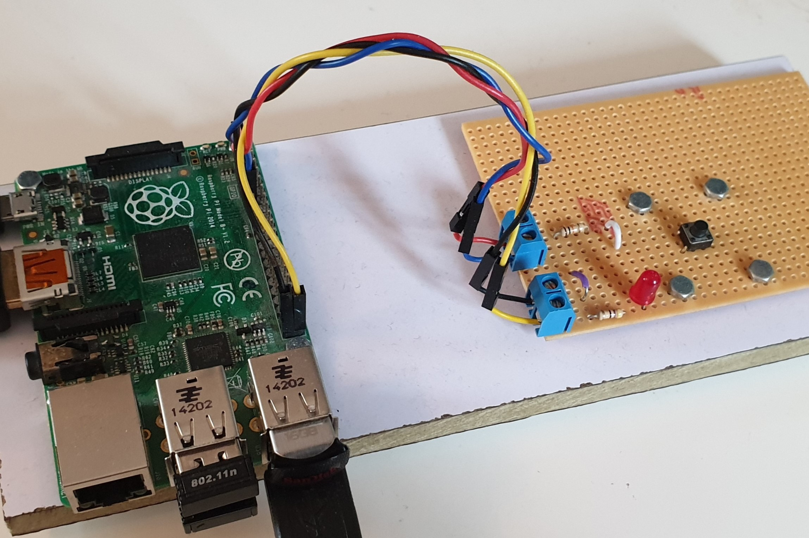
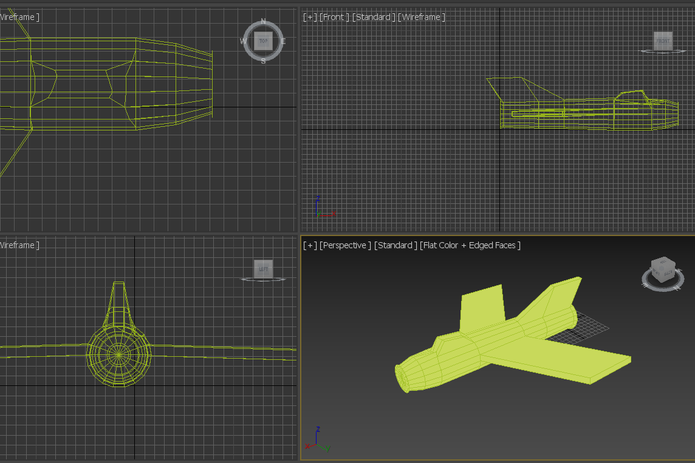
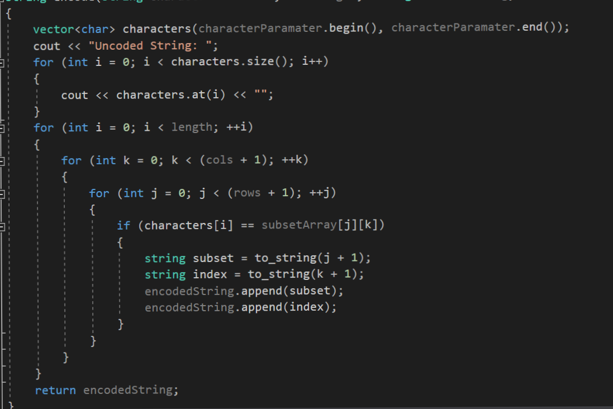

My Name is Daniel
I am 21 years old and currently studying towards a degree in Computer Science at Coventry University
and
am passionate about Computing, Robotics, Artificial Intelligence, Physics and Mathematics as well as Mechanical
and Electronic Engineering.
My interests include programming, working on my MX-5, science fiction,
motorsport,
photography, space and building computers.
Below is a portfolio of some of the projects that I am most proud of.
Various work for Royal Mail and MoD
C++/C/Java 8/Bash
From the months of June 2021 to August 2022, i was employed by Lockheed Martin. During these 14 months, I wrote code for applcations in the defence sector which is currently helpng to save lives.
I've also contributed to the developement and testing of stamp recognition and barcode decoding software for the Royal Mail that is now used on millions of mail pieces every day.
ZF Verification Tool
Python 3.7/C
From April to December 2020, I was writing professional software for TRW Automotive (ZF) in Python and C. The purpose of my software is too test proprietary software generated by Vector against an in-house, formal requirements document.
My software is now used company-wide, all over the world. Doing this project has taught me about the importance of Agile development and structured testing.
AWS Virtual Assistant
Python 3.7

The aim of this project was to create my own virtual assistant similar to Amazon's Alexa and Apple's Siri
using AWS for cloud hosting. The project uses APIs to access facts from Reddit,
play the radio, make phone calls, find weather forecasts, and send SMS messages. It does this using Request Handlers and AWS Lambda to enable the bot to respond. Each intent has multiple utterances.
Morse Code Reader
Python 3.5/SQL

With this project, I was setting out to make a device that could aid the learning of Morse Code. Using a Raspberry Pi and a custom-made interface board, the software can accurately time each button press and produce a translated English string from the inputted Morse Code and vice versa.
This project incorporated an external Leaderboard and an automatic SMTP emailing system.

This Android application, made in the Unity Game Engine, displays what the user is seeing on their screen, overlaying a fixed marker onto it.
When the user taps the screen, a 3D virtual model plane I created will appear in its place. This 'plane' will be fixed in place and the user
can move the camera around it on all axes as well as being able to increase and decrease the size of the model. This project made use of APKs.
Asymmetric Encryption
C++

As part of a larger project, I designed and implemented an Encryption Algorithm. It uses two public keys, a private key and a checksum to encode an
inputted string. It would take 9^(2n-1) attempts to bruteforce the encyption where 'n' is the length of the string. This means that the average sentence
would take 2.95e+94 attempts to bruteforce. A later update added the ability to encode a greater amount of characters.